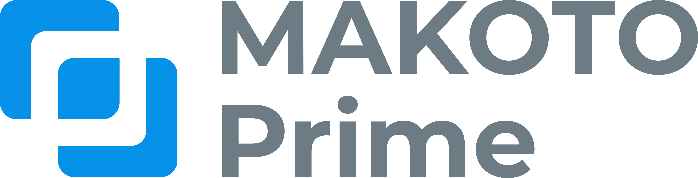
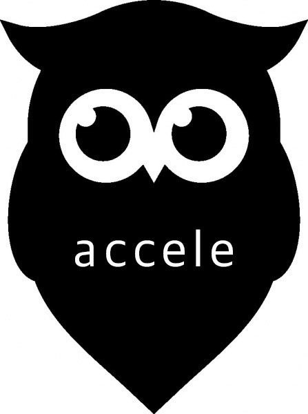
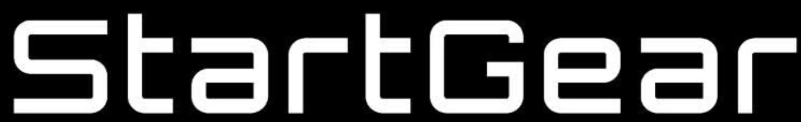
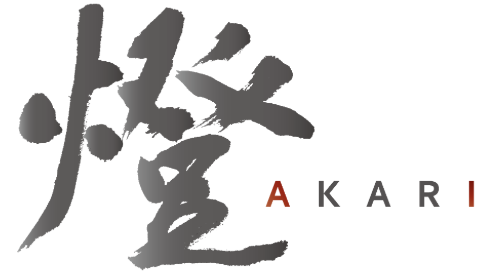
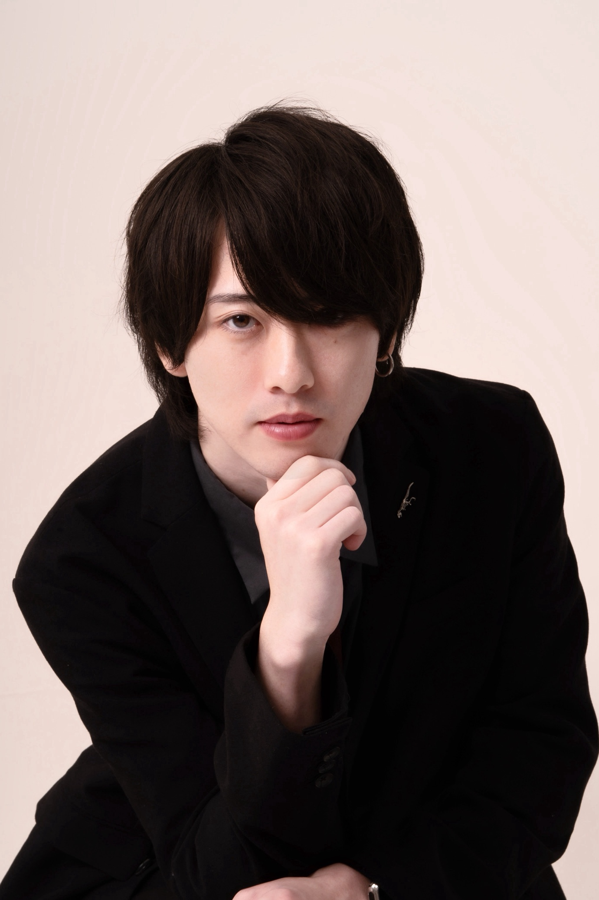

Sales Pilot — 営業コンサルティング
年商3,000万〜3億円のBtoB経営者へ。
ツールを入れ、人を増やし、研修を受けさせても売上の波が変わらない理由は一つ。
現場ではなく、営業の「設計」が変わっていないからです。
同じメンバーのまま、設計を変えただけで受注率が2倍になった会社があります。
完全無料・売り込みは一切しません。




ツールを入れ、人を増やして、研修を受けさせた。
それでも売上の波が変わらない、、
その理由は一つ。現場の努力を変え続けているのに、設計を変えていないから。
コンサルにありがちな「提案書を作って終わり」はやりません。
実際の商談に入り、失注理由を分解し、KPIを設計し、担当者が自走できるまで現場で動き続けます。
アポから受注までの全プロセスを可視化。過去の失注を分解し、どこでお客さんが離脱しているかを特定します。競合調査・差別化要素の言語化も含む。
「頑張れ」ではなく、何をすれば受注が増えるかを数字で見える仕組みに変えます。提案フローの再構築・提案書テンプレートの刷新も同時に行います。
実際の商談に入り、リアルタイムでフィードバック。ロールプレイ・振り返りを繰り返し、再現性のある営業トークに変えていきます。
「コンサルがいないと動かない組織」を作ることが最も失敗。再現性のある設計を組織に定着させてから離れます。依存ではなく自立を作ります。
支援事例
AI SaaS ／ 新規営業立ち上げ支援
課題：新規営業の立ち上げ。完全成果報酬・初期費用ゼロで、量と質を同時に構築する体制づくりを依頼。
「峠さんに依頼して正解でした。アポが入るだけじゃなく、商談の質が変わった実感があります。今後も引き続きお願いしたいです」
インタビュー全文をnoteで読む
峠 大輝（とうげ だいき）
株式会社Salesaurus 代表取締役
大東建託で新卒1年目から飛び込み営業1万回以上を経験。根性論だけでは限界があることを痛感し、「仕組みで売れる営業組織」の構築に転換。ベンチャー2社・ドイツでの海外営業を経て独立・法人化。
200アポを10日間で提供した。それでもクライアントの売上が安定しないケースを見て気づいた。アポは入り口にすぎない。受注につながる設計がなければ、どれだけ商談が増えても数字にならない。だから今は、設計から変えることに注力している。
年齢ではなく実績で判断してください。今も現場に入り、商談に同席し、数字が変わるまで離れません。「資料を作って渡して終わり」のコンサルは一切しません。
売り込みは一切しません。現状を聞いて、正直な意見をお伝えします。
合わないと判断すれば、そう伝えます。それだけです。
今の営業プロセスのどこで失注が起きているかが分かる
受注率を上げるために、最初に変えるべきポイントが分かる
今のKPI設計が本当に機能しているかどうかが分かる
セールス航海士が自社に合うかどうかが分かる
30分の流れ
完全無料・秘密厳守・売り込みなし
売り込みは一切しません。
現状を聞いて、正直な意見をお伝えします。
合わないと思えばそう言います。
それでも変えたい方だけ、一緒にやりましょう。
完全無料・秘密厳守
営業時間外はLINEにて翌営業日に返信します